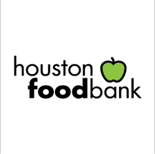
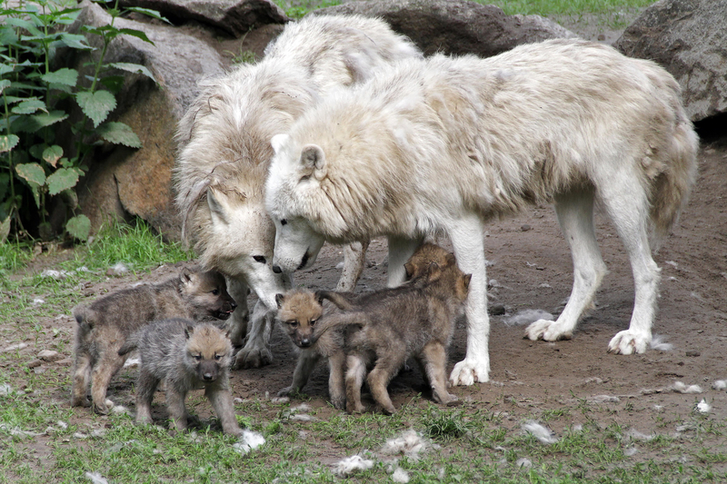

Houston Food BankI work frequently with the Houston Food Bank to help prepare donations for distribution to food insecure people around the Houston area. Organization Site |
Second Mile Mission CenterWith my church, I've done volunteer work at Second Mile Mission and provided food and clothing for people in need. Organization Site |

Saint Francis Wolf SanctuaryWith my Corps outfit, I've volunteered my time in supporting the St. Francis Wolf Sanctuary in its upkeep, assisting them in their mission to provide sanctuary for wolves and wolfdogs. Organization Site |